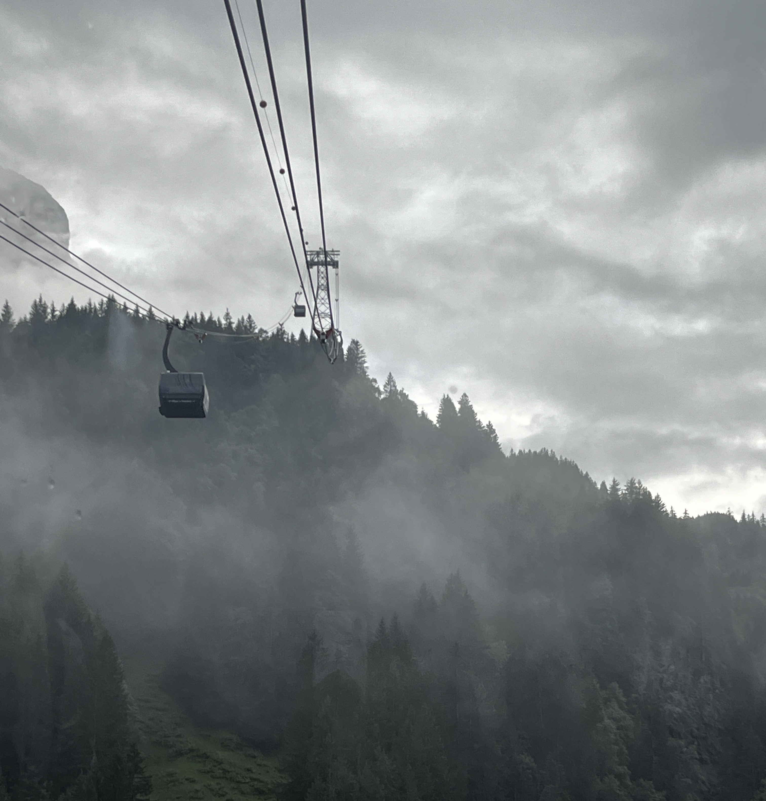
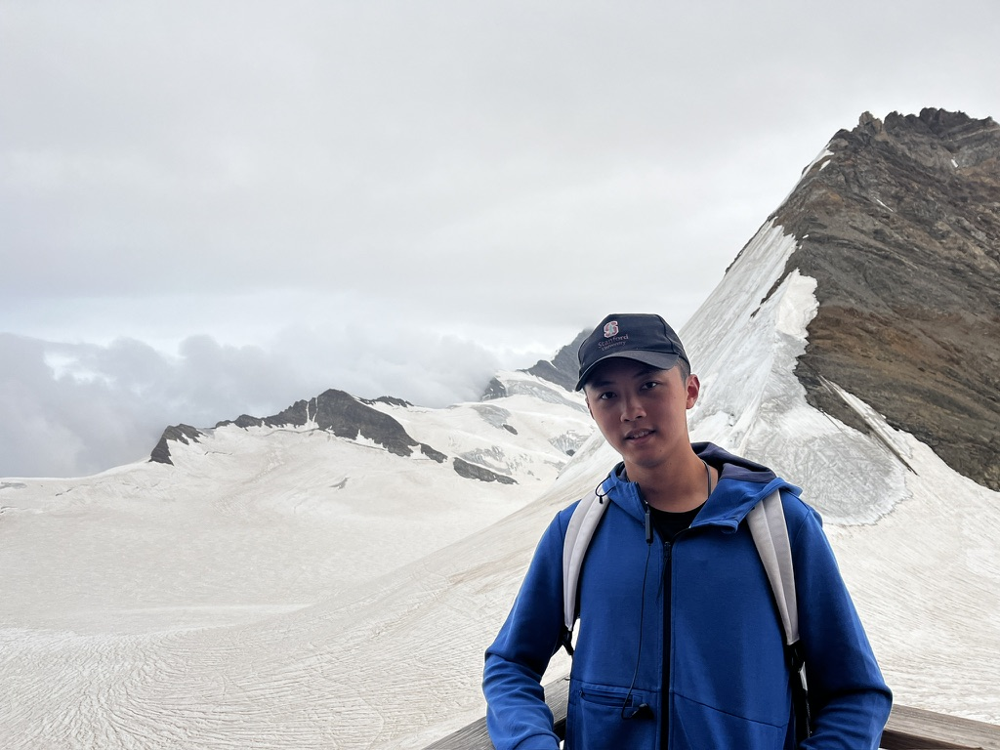
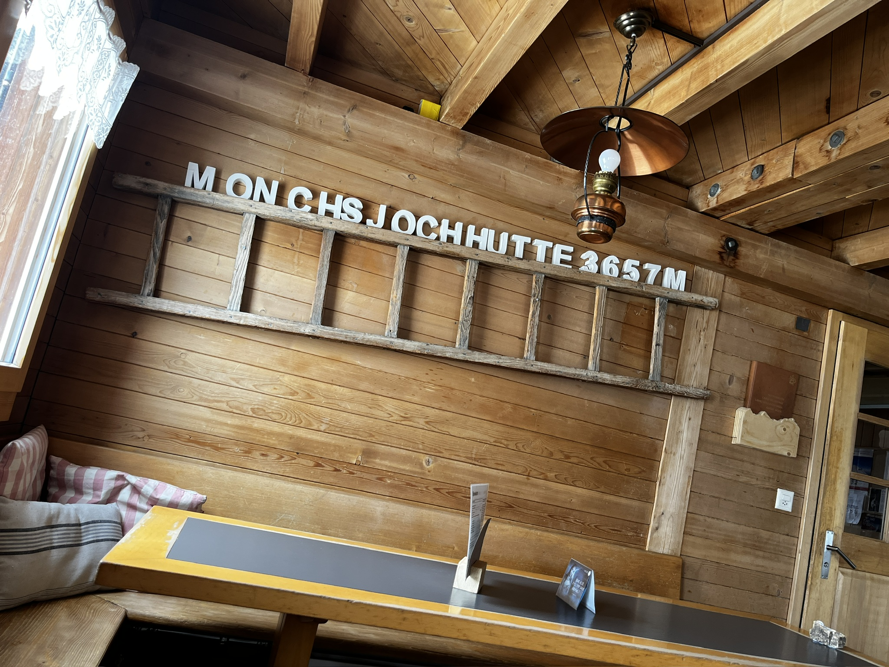
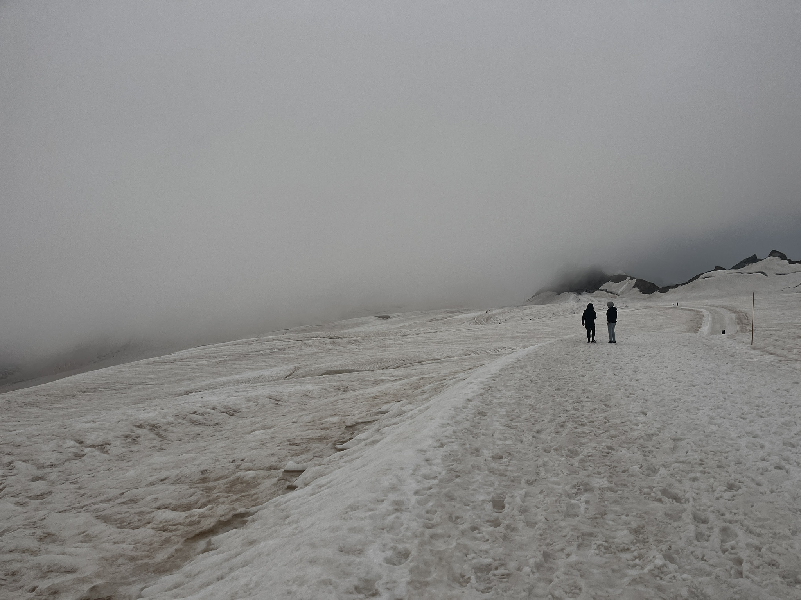

是山也，胡若其险乎！是川也，胡若其壮乎！雪川漫流入冰海，云霭浪涌卷太虚。绝𪩘乱岩凌残雪，峰峦争邈入北辰。残雪不融三千岁，欲献尧舜东向瞰。太白万言不尽其险，霞客平生难至行。然前有铁龙之穿岩，后有飞轿之凌壁。鲰生欲向巅，不及西市行。
轻革履，薄布衣，行暖微汗寒不侵。山高气短，吁息无能行愈缓。冰滑道阻，步履虚落险无凭。跬步信难行，陡坡百尺不见底。孤峰木庐，山峡险隘；极巅静憩，风失万籁。四里雪径何足道，复路方回首，飘霰漫漫千峰隐。

2024年8月17日
是山也，胡若其险乎！是川也，胡若其壮乎！雪川漫流入冰海，云霭浪涌卷太虚。绝𪩘乱岩凌残雪，峰峦争邈入北辰。残雪不融三千岁，欲献尧舜东向瞰。太白万言不尽其险，霞客平生难至行。然前有铁龙之穿岩，后有飞轿之凌壁。鲰生欲向巅，不及西市行。
轻革履，薄布衣，行暖微汗寒不侵。山高气短，吁息无能行愈缓。冰滑道阻，步履虚落险无凭。跬步信难行，陡坡百尺不见底。孤峰木庐，山峡险隘；极巅静憩，风失万籁。四里雪径何足道，复路方回首，飘霰漫漫千峰隐。
是川也，胡若其壮乎！
后有飞轿之凌壁
轻革履，薄布衣
孤峰木庐，山峡险隘
复路方回首，飘霰漫漫千峰隐